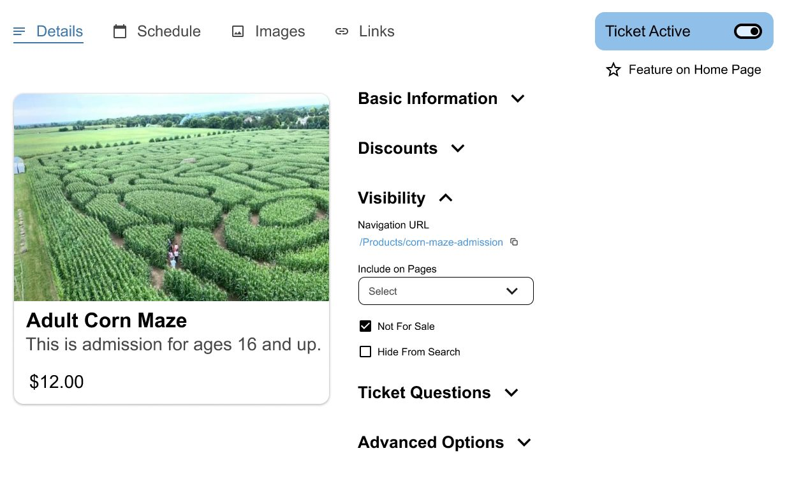

Farmpass
An event ticketing service for agritourism businesses, Farmpass services the unique needs of corn mazes and seasonal festivals around the country. However, after 8 years of added features it was in great need of rethinking. I worked to redesign the general look and feel of Farmpass, along with creating mockups of features yet to come. As it was an event ticketing platform, the look must blend into the brand of each company using it. Thus, it must be simple and universal, with a spare color palette and light feel.
Strategy
There were two primary focuses of the redesign, the ticket creation/editing system and the reports pages. These were the touchpoints that most users interacted with frequently adn the place where the most improvement could be made.
Ticket Management
After so many years of new features the ticket management system had become unwieldy. Row after row of settings that were organized mostly by how recently they were added. It was so overwhelming to new users that Farmpass employees would often have to create the tickets for them.
I reorganized the interface to include collapsible sections of settings and a preview to show what your ticket looks like. These sections and subsections helped guide the user to what they were looking for, even when they weren't exactly sure what it was.
Reports
The reports system was also in need of a redesign. Most were little more than tables, and the databases would load all at once, making page loads take as long as 2 minutes for an extensive report. Creating a page that presented less information at once was doubly effective; easier to navigate and faster to load. The challenge was how to present it. I worked to make each page feel cohesive and familiar, while being flexible enough to support different data sets and user needs. My solution was to create a frame that each report would fit in, with areas dedicated to each part of the various reports.